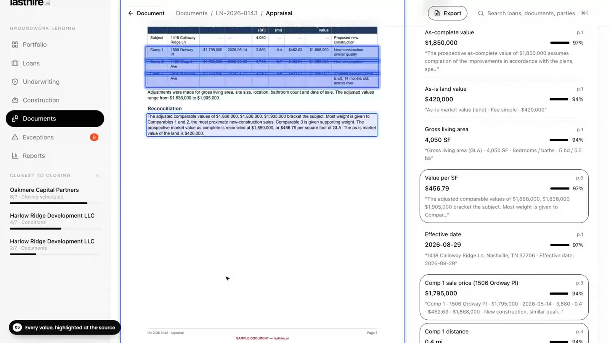

HIGHF-01
Appraisal above the market
12.6% over six independent sold comps. One of the appraiser's own comps is outside policy.
Appraisal · RentCastDrop in the file. lasthire.ai reads every document, pulls every figure with the page it came from, and checks the whole file against itself, independent comps and your credit policy. You get back the things a person needs to look at, with the evidence one click away.
No sign-up · Runs in your browser · Fictional sample loan file
One loan file, seventeen documents, from upload to underwriting summary. This is the real product running, not a mock-up.
The arithmetic runs in code, not in a language model's head, so every number can be traced and repeated.
Appraisal, title, bank statements, budget, draw request, lien waivers. Each document is recognized and filed on its own.
Every figure is pulled out with its document, page and the exact passage, highlighted at the source.
Documents against each other, the appraisal against independent sold comps, the draw against the inspection, all against your policy.
Findings come ranked by severity with their working shown. The reviewer makes every decision, and it all exports to Excel.
From the sample file in the demo. Each one found by comparing documents that nobody reads side by side on a Friday afternoon.
12.6% over six independent sold comps. One of the appraiser's own comps is outside policy.
Appraisal · RentCastA $184K deed of trust, missing from the application, and the title policy $45K short.
Title · Application · PFS · Title insuranceDoesn't foot by $12,400. The PDF was edited with iLovePDF and the fonts don't match.
Bank statement · file metadataVested in a different entity, owned 60/40 instead of 100%, with a 75% consent requirement.
Application · Title · Entity docs$612K declared, $535.8K verified, and an unsourced $85K wire from an affiliate.
PFS · Bank statementFraming $32.5K over the line, billed at 100% against 85% inspected, with a duplicate invoice number.
Draw · Pay app · Inspection · InvoicesClick a figure and you see the document, the page and the highlighted passage. Click a portfolio total and you see every loan that adds up to it.

Jump to the part you care about. Draw review starts at 9:08.
Everything in the videos is clickable. The loan file, people and companies are fictional. The comps are real sales.
A full construction loan file, from application to lien waivers.
Valuation, title, liquidity, fraud, budget and draw issues.
Each linked to the page and passage it came from.
It flags and shows its work. People approve.
No. It reads, checks and flags, and shows the working behind every finding. Your underwriter makes every decision, and every review action is logged.
The loan file, borrowers, companies and documents are fictional, built to contain the kinds of problems real files hide. The neighborhood comps are a real pull of recent sales around the property.
LTV, LTC, liquidity, statement footing and draw reconciliation are calculated in code from the extracted facts. Nothing is estimated by a language model, so the same file gives the same answer every time.
That's what the call is for. We build it around your credit policy, your document set and your data providers, not the other way around. Tell us how a file moves through your shop today and we'll tell you straight where it helps and where it doesn't.
Twenty minutes. Bring a file type that eats your team's week and we'll show you what lasthire.ai would catch in it. If it's not a fit, we'll say so.
dothan@trygroundworksolutions.com